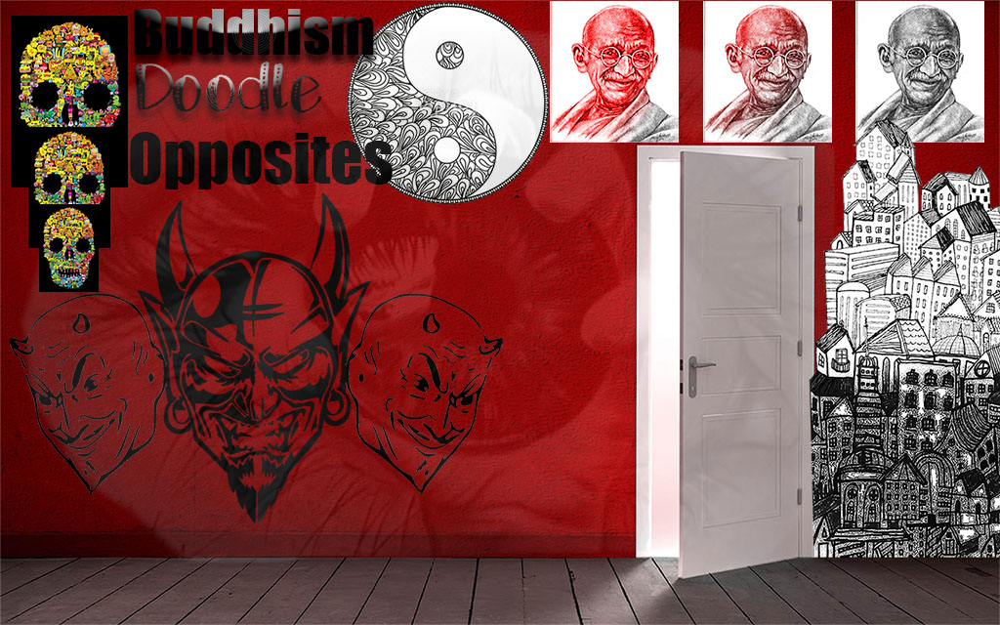
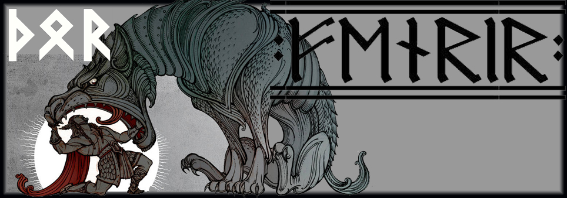
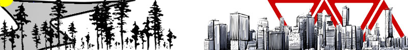
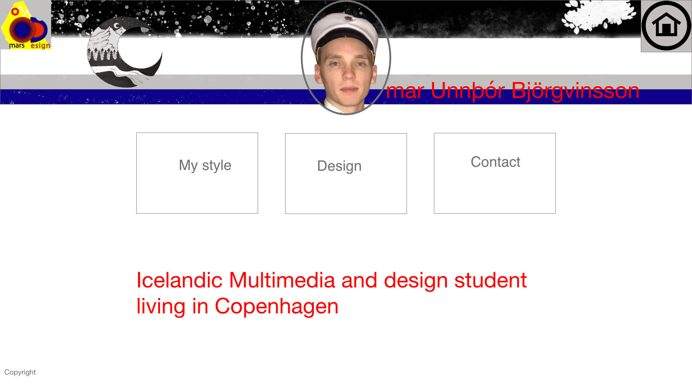
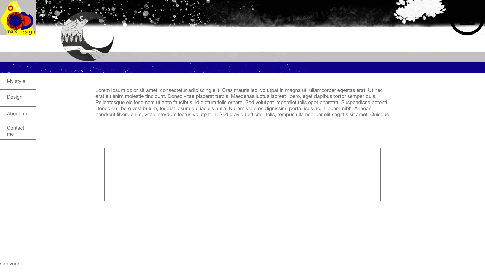
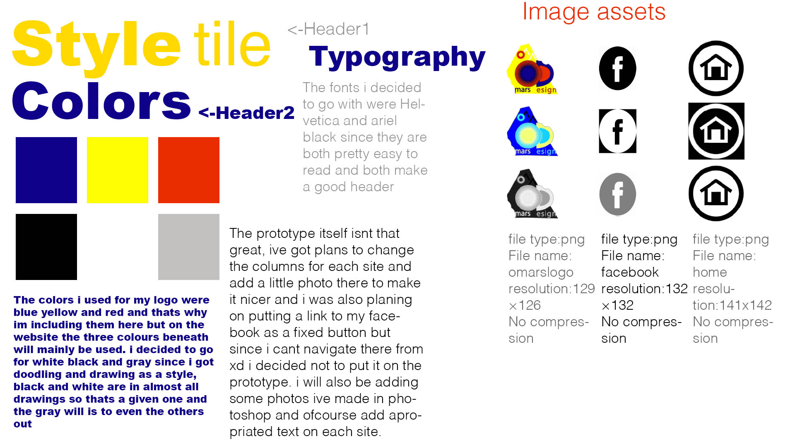

The first assignment we did that was not in the intro week was the moodboard.
The next assignment was alittle harder since we had to make our own content for our website but with a given style, i got doodle and drawing as a style and here are some of the photos i did.


In mobile first i had to use the content i already had and put it up on my website and make the website for a mobile first and make responsive so it doesnt look shit in a computer.
Mobile first websitein user Interface Design i learned to plan more since it can be very difficult for me to know where to start and here i learned how to use the magical app XD. Its an app i didnt even know exicted but there i learned how to make a prototype of my websites before i start coding, since it can be difficult to know where to start to begin with. And there you can also surf between all of your sites by simlpy linking them.





In the responsive web design project i kind of misunderstood and made a whole new website and deleted the previous so i just had to put her back up but here i learned how to make a website responsive so it looks good on both the phone and computer, i liked the first site better but i just liked to test myself and make some changes and try to challange myself in coding.
Responsive website.